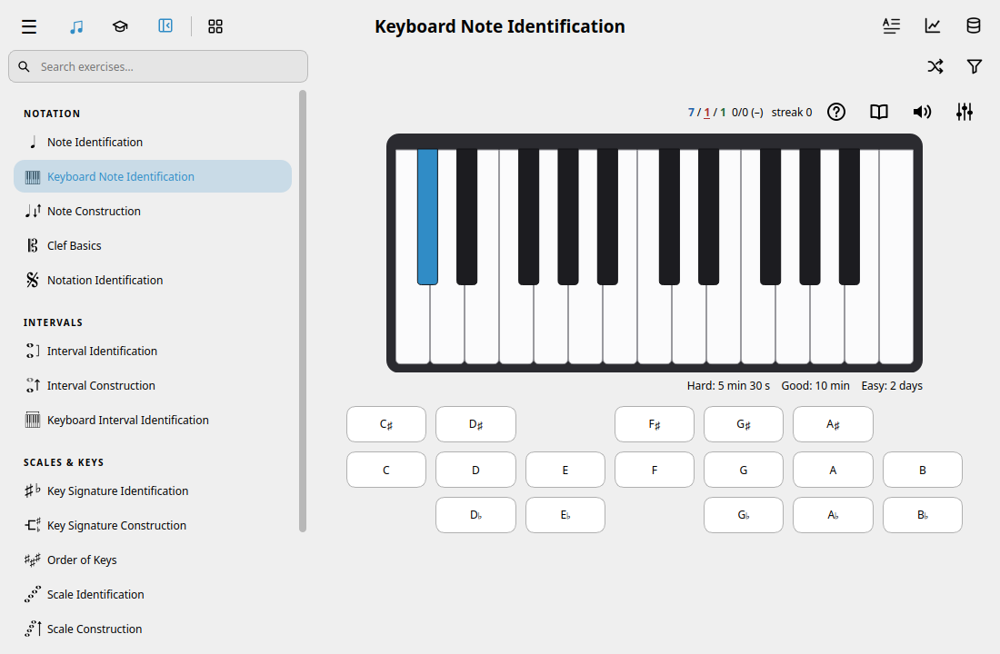
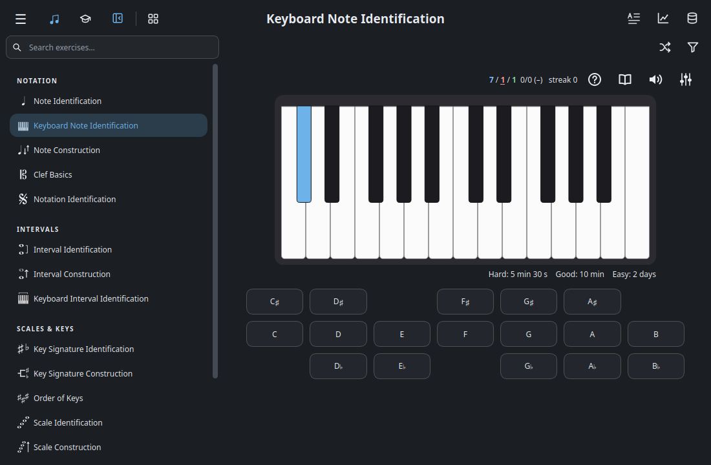

Spaced repetition and adaptive practice
Alto’s central idea is that practice time should go where it is needed: questions you miss or answer slowly come back sooner and more often, and questions you know well fade into the background. This chapter explains the learning science behind that, the family of algorithms people use for it, how ASRS schedules questions during practice, and how to change it without breaking it.
Practice algorithms
Under Settings → Practice → Question scheduling, each profile can choose ASRS, ARTS, SM-2, or FSRS. The Alto Spaced Repetition System (ASRS) is the default.
ARTS
Adaptive Response-Time-based Sequencing chooses the next question using your last first attempt and the number of other questions you have answered since. A miss can bring a question back after one intervening answer. A fast, correct answer usually gives you a longer gap. You can practice as long as you like.
Alto applies the published ARTS priority equation to saved questions under the current exercise settings and a sample of freshly generated questions. It uses a 100-millisecond response-time reference to distinguish quick answers in music drills, a baseline priority of 1 for unseen questions, and a random choice among tied scores. Earlier first attempts in the same exercise count when you reopen the app or switch algorithms. Mettler, Massey, and Kellman, equation 1
Calendar practice
Under Settings → Practice, New cards/day and Maximum reviews/day set the daily allowance for each exercise. The defaults are 10 new cards and 200 reviews. Both algorithms share these settings and the day’s usage. To change one exercise, open its settings with the sliders button and choose Daily Limits. Clear Use global for either limit to override it. Each limit has an Unlimited checkbox. For example, you can keep new cards at 10 per day and review every card that comes due. A zero pauses that kind of practice.
Exercise tiles show new cards in blue, outstanding incorrect cards in red, and today’s available reviews in green. The red count includes missed cards under the current settings even when their retry time is in the future or the daily review limit has been reached. Showing a new card uses an introduction slot. An unanswered new card stays available in blue so you can finish it after leaving the exercise. Grading the first answer completes the introduction. Grading a subsequent review uses one review slot, including a miss. A miss ends that showing. While the missed card waits for its scheduled retry, Alto offers other eligible cards. If only the retry remains and a review slot is available, the open exercise waits for it and resumes automatically. The allowances reset at local midnight, and overdue cards keep their scheduled dates.
Due questions come first. By default, Alto grades the first submission automatically. During the initial timing calibration, SM-2 uses grade 4 for a correct answer and grade 2 for a miss, with a one-minute retry after a miss. FSRS uses Good and Again with the Python library’s default learning steps. The first time a card moves between SM-2 and FSRS, the new scheduler inherits its due date and review progress. On later switches, each scheduler resumes its own schedule for that card. ARTS and ASRS practice leaves both calendar queues intact. SM-2 specification · Python FSRS
During calibration, Next interval shows how long after a correct first answer the card will be due. The value appears at the lower right of the music, or on one line beneath the keyboard. A new SM-2 card shows 1 day, and a new FSRS card shows 10 min.
After 40 timed, correct first answers in an exercise, automatic grading uses that profile’s rolling distribution. View the chart and adjust the cutoffs in Settings → Practice → Response-time grading…. Before you answer, the three possible intervals appear beside the music or in one row below the keyboard. A correct answer displays the assigned grade and interval. Response-time grading.


To choose your own interval, enable Grade correct answers with Hard, Good, or Easy in Settings → Practice. After a correct answer, the interval appears above each grade button. Choose how difficult it was to recall the answer to schedule the review and move on. Response time ends when you answer the exercise. A wrong answer automatically earns Again and moves you to the next available card. Self-grading disables the exercise’s Next Question setting. Both algorithms use Anki’s default learning steps. On a new card, Hard repeats in 5 min 30 s, Good advances to 10 min, and Easy skips to a day-based review. SM-2 starts Easy around four days. FSRS calculates it from memory stability at 90% desired retention. Alto applies the displayed delay from the time you choose a grade and uses its own daily limits. Anki deck options
For the range above each grade button and an example of how Alto spreads new cards across review days, see Self-grading a new card.
Note Identification, Note Construction, and Notation Identification count their full catalogs. In Notation Identification, each selected symbol counts as one card for Answer Button and one for Click on Staff. Different excerpts and staff positions share the symbol’s review date within each question type. If you select only Vertical turn and identify it correctly on your first SM-2 attempt, its first review is due one day later. Other generators sample questions up to the remaining daily allowance. With unlimited new cards, their blue count shows the next batch of up to 10 new questions and refills as you practice. A saved question is eligible under its original settings, when the exercise can adapt it to the current settings, or when the current generator produces the same question. Changing settings preserves its identity and schedule.
Why scheduling matters: three findings
Cognitive psychology has measured these for well over a century. They are the reason such software exists.
The forgetting curve. Hermann Ebbinghaus, memorising nonsense syllables in the 1880s, showed that memory decays quickly at first and then more slowly, roughly exponentially. Without review, most of a new item is gone in days.
The spacing effect. The same amount of study produces better long-term memory if it is spread out over time than if it is crammed together. Each successful retrieval after a delay slows the next forgetting. That is the basis of spaced repetition: review an item just before you would forget it, and the gaps can grow.
The testing effect (also retrieval practice). Trying to recall an answer strengthens memory more than re-reading it. Answering a question is not just a measurement, it is the exercise.
A related idea, Robert Bjork’s desirable difficulties, is that conditions that make practice feel harder (spacing, mixing topics, testing instead of rereading) often make learning last longer. Mixing different kinds of problem is called interleaving, and it is why Alto lets an exercise draw from several clefs, keys and note values at once.
The families of scheduling algorithm
All of them answer the same question: given what happened the last few times a person saw an item, when should it come back?
Leitner boxes (1970s). Cards live in numbered boxes. A right answer moves a card up a box, which is reviewed less often; a wrong one sends it back to box 1. Simple, no arithmetic, and the origin of many apps.
SM-2 (SuperMemo, 1987). Piotr Wozniak’s algorithm, still the basis of many programs. Each item has an ease factor EF
(starting at 2.5). After a review graded q from 0 to 5, the next interval is 1 day, then 6 days, then the previous interval
times EF; EF itself moves up for easy reviews and down for hard ones, never below 1.3. A grade below 3 resets the item.
Intervals grow geometrically, which matches the exponential forgetting curve.
Half-life regression (Duolingo, 2016). Burr Settles and Brendan Meeder model the probability of recall as
p = 2^(-Δ/h), where Δ is the time since last seen and h is a half-life (the delay at which recall falls to half). The
half-life is learned from data from many users with a regression on features such as how often the word was seen and missed.
DSR models and FSRS (2020s). The Difficulty, Stability, Retrievability model treats memory as three numbers per item.
Retrievability R is the probability of recall right now, a function of time and stability; stability S is how long
until R falls to 90%; difficulty D is how hard the item is. After each review a formula updates S and D, with
parameters fitted to review logs. FSRS (the Free Spaced Repetition Scheduler) is the open-source version used by Anki.
Rating systems and student models. Different in spirit: instead of scheduling, estimate a person’s ability and an item’s difficulty. Item response theory (IRT) and the Elo rating system do this; Bayesian knowledge tracing models the chance that a skill is “known” given a history of answers. Elo, adapted to education, is simple enough to code in a page.
Bandits and sampling. If you treat “which question next?” as a choice among options with different payoffs, you are in
the territory of the multi-armed bandit problem and the exploration versus exploitation trade-off. A softmax
(or Boltzmann) policy picks each option with probability proportional to exp(β × value). Hold that thought.
ASRS
ASRS samples generated questions and prior attempts on each turn.
It generates fresh questions.
FRESH = 10newQuestions are made by the exercise for each pick.It adds stored ones. From the database come questions this profile has met before under the same settings: the 25 with the highest strain (
hardest) plus 10 random ones (random_extra), fromDatabase.replay_candidates.It gives each candidate a weight from the scheduler, and draws one at random in proportion to weight (
scheduler.choose, which isrng.choices(options, weights=weights)). A question just asked (avoid) is excluded.
That is a weighted sampler, not a calendar. There are no due dates, nothing is ever “overdue”, and the system degrades gracefully when you skip a week. The cost is that it has no explicit model of forgetting over long gaps. It uses recent time only to avoid repeating a question too soon.
The strain
Every question a profile has met has a number, its strain (the database column strain; “how much practice it needs”),
between 0 and STRAIN_MAX = 6. A new question starts at NEW_STRAIN = 1.5. After each attempt, update_strain changes it:
if not correct:
strain += WRONG_PENALTY # +1.5: every wrong attempt pushes it up
elif attempt_no == 1:
strain += -CORRECT_REWARD + speed_term(
seconds, par_seconds=par_seconds
) # -0.5, plus a speed adjustment
else:
strain -= RETRY_REWARD # -0.2: right, but only after misses
strain = min(max(strain, 0.0), STRAIN_MAX)
Speed matters. The first answer’s time is compared with the exercise’s par_seconds, a number each exercise sets for
“how long a good first answer takes”. speed_term returns a bonus of up to -0.6 for answers at or below half of par, falling
linearly to zero at par, then a penalty growing to +1.0 at four times par. For par_seconds = 3:
First answer took |
Speed term |
|---|---|
1 s or less (≤ 0.5 × par) |
-0.60 |
1.5 s |
-0.60 |
3 s (par) |
0.00 |
6 s |
+0.33 |
12 s or more (≥ 4 × par) |
+1.00 |
A worked history, with par_seconds = 3: start at 1.5. A wrong answer in 4 s: 3.0. A right answer on the retry: 2.8. Then
three quick right answers (1.5 s each, each -0.5 and -0.6): 1.7, 0.6, 0.0. The idea is that a question you know becomes
unremarkable in about three confident answers, and a question you keep missing climbs toward the ceiling.
From strain to the chance of being asked
scheduler.weight turns strain into a number used for the draw:
def weight(strain, *, last_seen, now):
if strain is None: # never seen: a fixed middling weight
return math.exp(WEIGHT_SLOPE * NEW_STRAIN) # exp(0.6 * 1.5) = 2.46
cooldown = BASE_COOLDOWN * 2 ** (
3.0 - strain
) # seconds a question is "resting"
recency = 1.0 - math.exp(-max(now - (last_seen or 0.0), 0.0) / cooldown)
return math.exp(WEIGHT_SLOPE * strain) * max(recency, MIN_RECENCY)
There are two factors.
exp(0.6 × strain)is the softmax idea: a weight that grows exponentially with strain. Each extra point of strain multiplies the weight bye^0.6 ≈ 1.82. A question at strain 6 is about 37 times as likely as one at strain 0.Recency keeps a question from coming back right away. It rises from 0 to 1 as time passes since the question was last seen, with a cooldown that is long for easy questions and short for hard ones: 960 s at strain 0, 120 s at strain 3, 15 s at strain 6. After 60 seconds, a strain-1.5 question has recovered only 16% of its weight; a strain-6 one, 98%. A floor
MIN_RECENCY = 0.02stops anything being impossible.
Strain |
Weight when long unseen |
Cooldown |
|---|---|---|
0 |
1.0 |
960 s |
1.5 (new) |
2.5 |
339 s |
3 |
6.0 |
120 s |
4.5 |
14.9 |
42 s |
6 |
36.6 |
15 s |
Those two constants, WEIGHT_SLOPE = 0.6 and BASE_COOLDOWN = 120, are the main dials. Raise the slope and practice
concentrates harder on weak questions; lower it and it spreads out. Raise the cooldown and repeats are spaced further.
Item identity and the settings signature
Two pieces of bookkeeping make the history meaningful. Both are easy to break.
Question.item_key()is a 20-character hash of what is asked and where it is drawn, not of the note value or the order of the buttons. The same note on the same clef is the same item, whatever the order of the answer buttons. If you add a field toQuestionthat changes what the question is, you must decide whether it belongs in the key. Changing the key changes every item’s identity, which orphans users’ history, so do it only deliberately.Exercise.settings_signature()identifies the settings that shape the questions. A stored question is only replayed while the signature of the exercise now matches the signature it was stored with. If a user turns off the bass clef, bass-clef items stop coming back, and they return when it is turned on again. An exercise that reads settings must overridesettings_signatureor old questions would be replayed outside the user’s current settings.
What is stored
Each answer writes two things in one pass (Learner.record): a row in attempts (always: wrong answers included, with the time in
milliseconds), and an update of the items row for the question (strain, times seen, times right first try, times wrong, total
first-answer time, the signature, and the question itself as JSON so it can be replayed). See
Data and persistence. The statistics page is computed from attempts: accuracy, median
time, how many questions per day, the hardest questions (strain ordered), and the review heatmap.
Trying a change: simulate a student
Do not tune this by feel. Change a constant, run a simulation, look at the numbers. A simulated learner needs only a small rule for “how likely is a right answer for this question”. The script below uses twenty fixed questions of falling difficulty, asks 400 questions, and reports how often each was asked and its final strain. It runs on an in-memory database and takes under a second.
import random
from collections import Counter
from alto.exercises.base import Exercise, Question
from alto.learning import Database, Learner
class Twenty(Exercise):
"""Twenty fixed questions, "q0" to "q19"."""
name = "Twenty"
par_seconds = 3.0
def generate(self, rng: random.Random) -> Question:
return Question(
f"q{rng.randrange(20)}", choices=["right", "wrong"], answer="right"
)
skill = {
f"q{n}": 0.95 - 0.04 * n for n in range(20)
} # chance of a right answer: q0 is easy, q19 is hard
rng, now = random.Random(1), 1_000_000.0
db = Database() # in memory: nothing is saved
learner = Learner(db, profile=db.add_profile("Sim"))
exercise, asked = Twenty(), Counter()
for _ in range(400):
q = learner.pick(exercise, rng=rng, now=now)
right = rng.random() < skill[q.prompt]
seconds = rng.uniform(1.5, 3.0) if right else rng.uniform(3.0, 6.0)
learner.record(
exercise,
question=q,
answer="right" if right else "wrong",
correct=right,
attempt_no=1,
seconds=seconds,
now=now,
)
asked[q.prompt] += 1
now += seconds + 1.0 # the next question appears a second later
Passing now= to pick and record is what lets a simulation run faster than real time. The run above gives, for a few of the
questions:
q0 asked 3 times, strain 0.0 (easy: nearly forgotten about)
q5 asked 2 times, strain 0.0
q10 asked 12 times, strain 3.18
q15 asked 57 times, strain 5.05 (hard: asked most)
q19 asked 56 times, strain 5.04
That is the intended behavior: the hard questions get about twenty times the attention of the easy ones, and the easy ones
are still asked occasionally (new items, the random replays, and the floor on recency). Try halving WEIGHT_SLOPE and see how
the spread flattens. A real evaluation would also model forgetting (a right-answer chance that falls with time since last
seen) and look at long-run accuracy, as research on schedulers does.
Design problems to know by name
Cold start. A new question has no history, so its weight is a guess. ASRS uses
NEW_STRAINfor it.Leeches. An item that is failed again and again. It saturates at the strain ceiling and can crowd out everything else. Anki tags leeches and can suspend them; Alto does not, because strained questions are only more likely, and the recency term keeps them from repeating immediately.
Ceiling and floor effects. Clipping strain to 0 and 6 loses information at the ends. That is a deliberate simplicity.
Gaming. If the user always answers instantly, the speed bonus rewards them. The score counts only the first attempt.
Non-stationarity. People improve and forget, so a model fitted once drifts. A scheduler that updates with every answer, as this one does, adapts for free.
Response time as evidence. Using speed as well as correctness is common in research on fluency, and it is what makes a skill like sight-reading, where being right but slow is not yet mastery, trainable.
Where to go from here
If you wanted a true memory model, the next step would be to give each question a stability that grows with each successful retrieval and a retrievability that decays with time (the DSR family), and to schedule by “chance of recall now”. It suits fixed decks better than generated ones. For Alto’s generated questions, a better investment is probably in how new questions are chosen: adapting the range, clef and key to estimated ability, with an Elo-like rating of each setting.
Words to search for
Forgetting curve. Spacing effect. Testing effect. Retrieval practice. Desirable difficulties. Interleaving. Distributed practice versus massed practice. Overlearning. Leitner system. SM-2. Half-life regression. FSRS. DSR model. Item response theory. Elo rating. Bayesian knowledge tracing. Knowledge components. Multi-armed bandit. Exploration-exploitation. Softmax, Boltzmann distribution, inverse temperature. Cold start. Leech.
Further reading
Hermann Ebbinghaus, Über das Gedächtnis (Duncker & Humblot, 1885); English translation by Henry A. Ruger and Clara E. Bussenius, Memory: A Contribution to Experimental Psychology (Teachers College, Columbia University, 1913). The original forgetting curve.
Nicholas J. Cepeda, Harold Pashler, Edward Vul, John T. Wixted and Doug Rohrer, “Distributed practice in verbal recall tasks: A review and quantitative synthesis”, Psychological Bulletin 132(3), 2006: the spacing effect, across hundreds of experiments.
Henry L. Roediger III and Jeffrey D. Karpicke, “Test-enhanced learning: Taking memory tests improves long-term retention”, Psychological Science 17(3), 2006: the testing effect.
Peter C. Brown, Henry L. Roediger III and Mark A. McDaniel, Make It Stick: The Science of Successful Learning (Belknap Press of Harvard University Press, 2014): a readable book that covers all of the above for non-specialists.
Robert A. Bjork, “Memory and metamemory considerations in the training of human beings”, in J. Metcalfe and A. Shimamura (eds.), Metacognition: Knowing about Knowing (MIT Press, 1994): desirable difficulties.
Paul Pimsleur, “A memory schedule”, Modern Language Journal 51(2), 1967: an early graduated-interval schedule.
Sebastian Leitner, So lernt man lernen (Herder, 1972): the box system, in German.
Piotr A. Wozniak and Edward J. Gorzelańczyk, “Optimization of repetition spacing in the practice of learning”, Acta Neurobiologiae Experimentalis 54, 1994; and Wozniak’s description of SM-2 at super-memory.com/english/ol/sm2.htm (the primary source, on the author’s own site).
Burr Settles and Brendan Meeder, “A Trainable Spaced Repetition Model for Language Learning”, Proceedings of the 54th Annual Meeting of the Association for Computational Linguistics, 2016: half-life regression, with the data and results.
J. Ye et al., “A Stochastic Shortest Path Algorithm for Optimizing Spaced Repetition Scheduling”, Proceedings of the 28th ACM SIGKDD Conference on Knowledge Discovery and Data Mining, 2022: the basis of FSRS.
Radek Pelánek, “Applications of the Elo rating system in adaptive educational systems”, Computers & Education 98, 2016.
Albert T. Corbett and John R. Anderson, “Knowledge tracing: Modeling the acquisition of procedural knowledge”, User Modeling and User-Adapted Interaction 4, 1995: Bayesian knowledge tracing.
Frederic M. Lord, Applications of Item Response Theory to Practical Testing Problems (Lawrence Erlbaum, 1980).
Richard S. Sutton and Andrew G. Barto, Reinforcement Learning: An Introduction, 2nd ed. (MIT Press, 2018): chapter 2 on multi-armed bandits, including softmax action selection (free from the authors at incompleteideas.net/book).